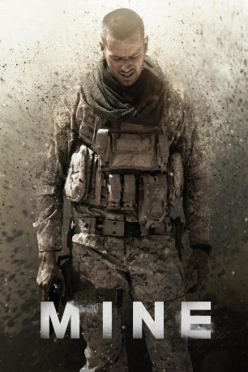

#6101 Mine
 gesehen am 17.06.2017
gesehen am 17.06.2017
 
 IMDB-Wertung: 6.0 / 10
IMDB-Wertung: 6.0 / 10  Metascore: 0
Metascore: 0 
Scharfschütze Mike (Armie Hammer) und sein Partner sollen eine Zielperson in der arabischen Wüste ausschalten, doch der Auftrag schlägt fehl und der Weg zur rettenden Landungszone führt direkt durch ein gewaltiges Minenfeld Schon nach wenigen Schritten stirbt Mikes Partner und auch er selbst tritt auf eine Mine und kann sich fortan nicht von der Stelle bewegen ohne die Sprengfalle auszulösen. So bleibt ihm nichts anderes übrig, als auszuharren und auf Rettung zu warten, während er sich mit wilden Tieren, Dehyrdierung und sogar einem ausgewachsenen Sandsturm herumschlagen muss...
Jahr: 2016
Dauer: 106 Minuten
FSK:
Land: USA Studio: Well Go USA EntertainmentTonspuren: DTS - ,
Untertitel: Deutsch,
Auflösung: 1080p (1920x816) Größe: 6123 MB
Genre: Thriller, Krieg
Regisseur: Fabio Guaglione, Fabio Resinaro
Drehbuch: Bent Hamer
Soundtrack:
Darsteller:
 Armie Hammer als Mike
Armie Hammer als Mike Annabelle Wallis als Jenny
Annabelle Wallis als Jenny Tom Cullen als Tommy Madison
Tom Cullen als Tommy Madison Clint Dyer als Berber
Clint Dyer als Berber Geoff Bell als Mike's Father
Geoff Bell als Mike's Father Juliet Aubrey als Mike's Mother
Juliet Aubrey als Mike's Mother Luka Peros als Delta Force #1
Luka Peros als Delta Force #1- David Kirk Traylor als Comander Barton
- Inés Píñar Mille als Berber Girl
- Daniel Sandoval als Mike, Boy
- Agustín Rodríguez als Sayid Assiff
- Yesarela Arzumendi als Beduin Bride
- Manuel Medero als Beduin Groom
- Edoardo Purgatori als Radio Operator
Datei: X:\2016(G-M)\Mine (2016, FSK, 1920x816).mkv seit 01.05.2017
Festplatte: HD 2016(A-Z)
 Es gibt insgesamt 164 Filme in der Gruppe '2016(G-M)'
Es gibt insgesamt 164 Filme in der Gruppe '2016(G-M)'